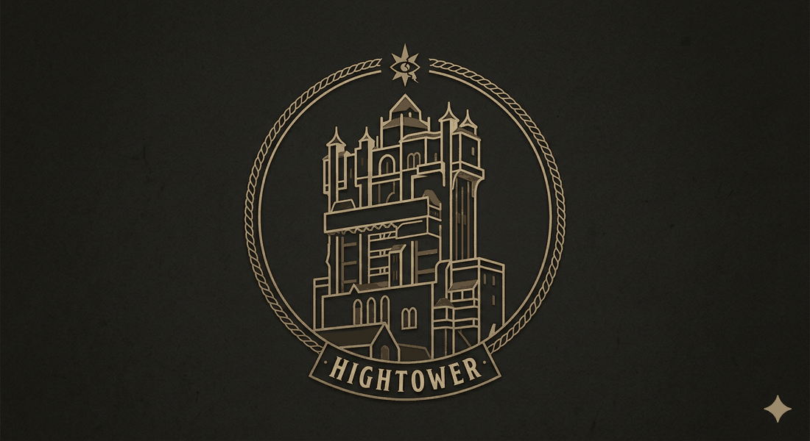
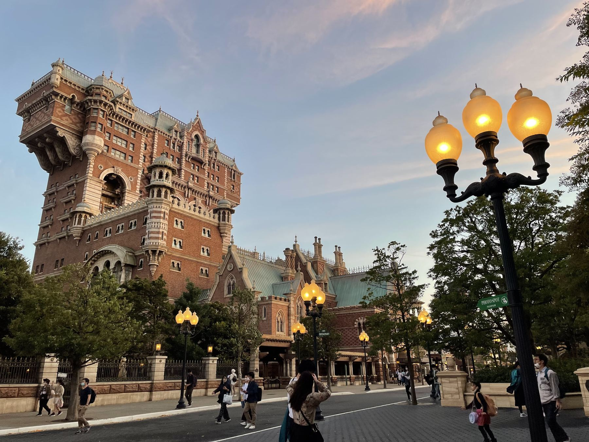

1912年のアメリカ・ニューヨーク。人々が「恐怖のホテル（タワー・オブ・テラー）」と呼び畏怖する壮麗な廃墟「ホテル・ハイタワー」。現在この建物では、ニューヨーク市保存協会による見学ツアーが催されており、一般に公開されています。しかしその静寂の裏には、1899年12月31日の大晦日に起きたオーナー失踪事件が眠っています。
創設者のハリソン・ハイタワー三世は、富と名声、誠実さとは無縁の、あくなき収集欲の象徴でした。彼は世界中を巡って美術品や文化遺産を半ば略奪に近い形で収集し、それを誇示するためにこの巨大なホテルを建設したのです。その歪んだ自己顕示欲は、ネオ・ゴシック、ムガル様式、ビザンティンといった世界各地の建築様式を無理やり一つの塔に融合させた、美しくも奇怪なホテルの外観そのものに現れています。
| Year | Event |
|---|---|
| 1835年 | ハリソン・ハイタワー三世 誕生。 |
| 1886年 | 父の大邸宅を継承。世界規模の略奪探検と収集を本格化。 |
| 1892年 | 自らの富の象徴である「ホテル・ハイタワー」を開業。 |
| 1899年 | コンゴ川流域のムトゥンドゥ族から「シリキ・ウトゥンドゥ」を強奪。 |
| 1899年12月31日 | ホテル内での記者会見直後、エレベーター落下事故により謎の失踪。 |
| 1912年 | ニューヨーク市保存協会により、ホテル内の見学ツアーが開始される。 |
失踪事件の発端となったコンゴ川流域への遠征。1899年当時、「シリキ・ウトゥンドゥ」は、黒魔術を操る部族として周囲に恐れられていた「ムトゥンドゥ族」によって、集落の強大な守り神として祀られていました。
しかしこの偶像にまつわる恐ろしい掟を破った者はことごとく消息不明となっており、ムトゥンドゥ族にとっては一刻も早く手放したい「呪いの厄災」でもありました。掟によって「他者への譲渡」も「自ら捨てること」も固く禁じられていた彼らにとって、唯一呪縛を解く方法は「部外者に盗み出してもらうこと」だけだったのです。
1899年7月16日、お宝を求めてコンゴ川流域を探索していたハイタワー三世率いる22人の探検隊は、手ぶらのまま焦りを募らせながら、このムトゥンドゥ族の集落へとたどり着きます。祀られていたシリキ・ウトゥンドゥを一目で気に入ったハイタワー三世は買い取りの交渉を試みますが決裂。業を煮やした彼は部下に武力行使を命じ、神聖な祭壇から力ずくで偶像を強奪しました。
数百人の猛者を抱える部族からの強奪。血みどろの戦いは避けられないはずでした。しかし強奪の瞬間も、その後にカヌーでコンゴ川を下って逃走する間も、追っ手は一人としてやってきませんでした。ただ、静まり返るジャングルの奥地からは、彼らの敗北をあざ笑うかのような不吉で狂気じみた笑い声だけが、延々と響き渡っていたといいます。
この異様な光景に、ハイタワーの忠実な執事であるアーチボルト・スメルディングだけは強い違和感を覚え、背筋が凍るような不吉な予感を抱いていました。
強奪の直後、ムトゥンドゥ族の集落は隣接する別部族からの突然の急襲を受け、一夜にして跡形もなく壊滅したという不穏な噂が探検隊の耳に届きます。シリキ・ウトゥンドゥの掟には「他人に譲渡してはならない」という絶対のルールがありました。彼らは「盗ませる」という策略によって呪縛から逃れようとしましたが、精霊の超自然的な知恵を欺くことはできませんでした。「盗み出させるよう仕組んだ作為」そのものが精霊によって「禁忌である譲渡（間接的な引き渡し）」とみなされ、ムトゥンドゥ族は自らが恐れた呪いの破滅を、結局免れることができなかったと推測されています。
この悲劇を読み解く最大の鍵が、ムトゥンドゥ族が崇拝していた精霊の偶像「シリキ・ウトゥンドゥ」です。これは単なる木彫りの置物ではなく、内部には「古代の呪術師の実際の遺骨」が仕込まれ、全身に無数の金属片が打ち込まれた恐るべき呪物でした。偶像には、扱う者が絶対に破ってはならない「8つの掟」が存在しました。
1. 崇拝すること。
2. 燃やさないこと。
3. 閉ざされた場所にしまわないこと。
4. おろそかにしないこと。
5. 馬鹿にしないこと。
6. 他人に渡さないこと。
7. 放置しないこと。
8. 恐れること。
傲慢の極みにあったハイタワー三世は、偶像を木箱に閉じ込め、公の記者会見で呪いを嘲笑し、エレベーター内では吸っていた葉巻の火をその頭に押し付けるなど、あらゆる掟を徹底的に踏みにじりました。ハイタワーの探検隊がムトゥンドゥ族を襲撃した際、原住民たちが突然戦闘をやめ、あっさりと偶像を明け渡したのは降伏ではありませんでした。「掟を破ったハイタワーが、精霊の手によって確実に破滅する」ことを彼ら自身が確信していたからです。
強奪に成功した一行は、道中の各地で歓迎を受けます。しかし村人たちの瞳の奥には一様に深い恐怖の色が浮かんでいました。
1899年8月12日、遠征の終盤に訪れたある村で、スメルディングは一人の盲目の老人と出会います。老人はその偶像を「緑のもの」と呼んで激しく怯え、スメルディングに「偶像を譲渡したり、自ら捨ててはならない」という絶対の掟を教えました。この瞬間スメルディングは、あの強奪の際になぜムトゥンドゥ族が牙を剥いて追ってこなかったのか、その真の理由を悟ります。彼らは、ハイタワーに「盗ませる」ことで呪縛から逃れようとしたのです。
そしてスメルディングは、集落がその後すぐに謎の壊滅を遂げたという噂の真の意味も理解しました。精霊の知恵の前に「盗ませる策略」という小細工は通用せず、それ自体が禁忌である「間接的な譲渡」とみなされた。ムトゥンドゥ族は結局、壊滅という凄惨な呪いの代償を支払わされたのだと確信したのです。
老人はさらに呪術の儀式についても語りましたが、それは一つでも手順を間違えれば術者本人に恐ろしい厄災が跳ね返るという、極めて危険なものでした。最後に老人は「何よりも、偶像の『目』が開く瞬間に気をつけろ」と言い残して姿を消します。しかしシリキ・ウトゥンドゥの目は常に固く閉じられていたため、スメルディングはその言葉の真意を測りかねていました。
翌日、スメルディングはこの不吉な話を主人に報告しますが、ハイタワー三世はただ大笑いし、偶像を激しく罵倒しました。するとそのわずか数分後、ハイタワー三世らが乗っていたカヌーに、晴天の空から突如として鮮烈な緑色の稲妻が落ち、激しく炎上したのです。主人はただの偶然と一蹴しましたが、スメルディングの心には「これは精霊からの警告だ」という確信が深く刻まれました。
スメルディングはこれ以上の災いを防ぐため、旅の途中、偶像の世話はすべて自分に任せてほしいと主人に懇願します。自らが精霊へ深い敬意と恐怖を払い続けることで、呪いの発動を何としても食い止めようとしたのです。
その後も船中でのハイタワー三世の横暴は止まりませんでした。スメルディングの必死の制止を無視し、「完全に覆ってはならない」という掟を破って偶像を窮屈な木箱に閉じ込めてしまったのです。直後、船は大嵐に見舞われ難破寸前となりますが、スメルディングが狂ったように木箱をこじ開けて偶像を外に出すと、嵐は嘘のように収まりました。スメルディングは偶像の前に跪き、主人がいかにこの偶像を素晴らしい場所（ホテルの最上階）に飾ろうとしているかを、現地で覚えたスワヒリ語で必死に訴えかけ、精霊の怒りを宥め続けたのです。
深夜0時、エレベーターを襲った不気味な緑色の雷撃。生存者の証言によれば、ハイタワー三世はただ落下したとも、「シリキ・ウトゥンドゥの放つ緑の光に引きずり込まれるようにして消えた」とも、「自室から大広間（ボールルーム）へ吹き飛ばされた」とも言われています。残されていたのは、彼が被っていたトルコ風の帽子だけでした。
このホテルには、不吉な数字「13」の奇妙な連鎖が刻まれています。
・事件からツアー開始までの空白期間：13年（1899年〜1912年）
・ハイタワー失踪に関わった人数：13人
・秘密の書斎へ続く階段の段数：13段
・部屋に遺された呪術道具や重要書類の数：13点
これらは、偶然ではなくすべて呪いの仕掛けの一部なのです。
ホテル・ハイタワーの物語は、単体のオカルト事件に留まりません。ハイタワー三世は、ディズニーシー全体の海洋探検史をつなぐ世界規模の探検家・冒険家学会「S.E.A.（Society of Explorers and Adventurers）」のメンバーでした。1538年の大航海時代に創設されたこの学会において、ハイタワー三世は19世紀の「再興期」を支えた主要メンバーの一人として名を連ねています。彼のあくなき収奪行為は、この組織の絶大な特権を利用して行われていました。
ソアリンの「カメリア・ファルコ」や、香港の「ヘンリー・ミスティック卿」とも深い繋がりがあり、ミスティック卿の邸宅には、彼とハイタワー三世がシリキ・ウトゥンドゥを抱えて微笑む不気味な絵画が今も飾られています。
そして迎えた1899年12月31日の大晦日。ハイタワー三世は自身のホテルにて、コンゴ遠征の帰還と偶像のお披露目を兼ねた盛大なニューイヤーパーティーを開催します。
その日の昼、ホテルの豪華な書斎において、世界中から集まった新聞記者を前に記者会見が開かれました。会見の最中、「ニューヨーク・グローブ通信」の記者マンフレッド・ストラングから「その偶像には、原住民の間で恐ろしい呪いがあると言われていますが、本当に安全なのですか？」と鋭い追及を受けます。
しかしハイタワー三世は記者たちに向かってシリキ・ウトゥンドゥを高く掲げ、「呪いの偶像だと？馬鹿馬鹿しい！私のコレクションにふさわしい、ただの安物の置物だ！」と豪快に一笑に付しました。主人の傲慢な態度を横で見ていたスメルディングは、言葉にできない恐怖で全身を震わせていました。
ハイタワーに仕えた従順な執事「アーチボルト・スメルディング」。20ヶ国語以上を操る超エリートの彼は、ロビー正面の巨大壁画やアフリカ探検の壁画、ラジャのプール（現メモラビリア）の写真など、ホテルの各所にその姿を残しています。探検遠征での冷徹な立ち回りや、直立不動で主人に仕える姿からは、異常なまでの忠誠心が窺えます。
【ファンの間で囁かれる非公式の「スメルディング黒幕説」】
公式設定では、スメルディングは主人の失踪と同時に姿を消した（あるいは運命を共にした）とされています。しかし一部のファンの間では、彼が偽名を使ってライバルの娘ベアトリスに接触し、ホテルの解体を防ぐために見学ツアー（タワー・オブ・テラー）を裏で仕組んだ「真の黒幕」なのではないか、という考察が語り継がれています。
この説を頭の片隅に置きながら、アトラクションの待ち時間（Qライン）にロビーの壁画や写真の中に描かれた彼の「冷徹な眼光」を探してみるのも、ホテル・ハイタワーをめぐるもう一つの楽しみ方かもしれません。
パーティーが最高潮を迎えた深夜、ハイタワー三世は自らの執務室（最上階のオフィス）に偶像を飾るため、シリキ・ウトゥンドゥを抱えてエレベーターへと乗り込みます。
乗り込む直前、スメルディングは青ざめた顔で「旦那様、どうかその偶像に最低限の敬意をお払いください。盲目の老人の警告をお忘れなく」と命がけで諌めました。しかしハイタワー三世は鼻で笑い、エレベーターの鉄扉が閉まる瞬間、あざ笑うかのように、咥えていた高級葉巻の火をシリキ・ウトゥンドゥの頭部にじりじりと押し付けたのです。
これが、数分後に起こる未曾有の惨劇と自らの失踪を夢にも思っていなかった、ハリソン・ハイタワー三世の歴史上最後の姿となりました。エレベーターが上昇を始めた直後、これまで固く閉じられていたシリキ・ウトゥンドゥの「両目」が、不気味な緑色の光を放ちながら見開かれたのです。
ホテルのすぐ隣、アメリカンウォーターフロントの港に堂々と停泊する巨大客船「S.S.コロンビア号」。この船を所有するU.S.スチームシップカンパニーのオーナー「コーネリアス・エンディコット三世」は、ハイタワー三世の父の代からの終生のライバルでした。
海運で近代都市の「光」と商業的進歩を象徴するエンディコットと、私的な収集欲と古代への「闇」を体現したホテル・ハイタワー。二つの巨大な富豪文化は、同じ都市の中で常に激しいせめぎ合いを見せていました。ハイタワー三世の失踪後、コーネリアスはホテルを解体して「エンディコット・グランドホテル」を建てようと画策します。しかし、ハイタワーの探検に密かに憧れていた娘「ベアトリス」が父の開発計画に反発して「保存協会」を設立したことで、ホテルは守られることになりました。
世界中のディズニーパークに「タワー・オブ・テラー」は存在しますが、東京ディズニーシーのものは世界でも類を見ない完全オリジナルの世界観を誇ります。
海外版（フロリダやパリなど）は、アメリカの伝説的なSF番組『トワイライト・ゾーン』のライセンスのもと、1939年のハリウッドの超常現象ホテルを描いています。しかし日本への導入にあたり、この番組が日本の若年層に馴染みが薄いことや、東京ディズニーシー全体のコンセプトとの整合性を保つため、オリエンタルランドとWDI（ウォルト・ディズニー・イマジニアリング）はライセンスを使わず、総工費約210億円を投じてこの地に根付く独自の歴史神話を構築しました。
「都市伝説」「ギルド時代の秘密結社」「一族の利権争い」を組み込んだ東京版は、単なるホラーを超えた、極めて完成度の高い「歴史ドキュメンタリー」としての廃墟美を実現しています。アトラクション専用に書き下ろされた重厚なオーケストラと不気味なパイプオルガン、聖歌隊のコーラスは、乗車前から私たちを「ハイタワー三世の歪んだ世界」へと引きずり込んでいきます。
最終編集日：